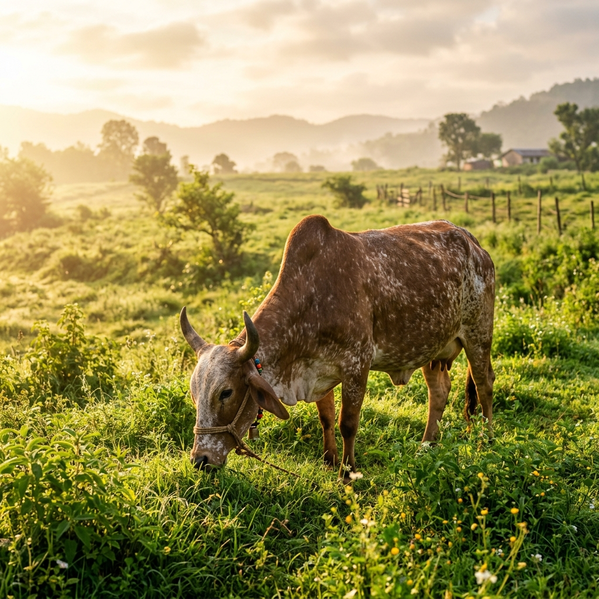
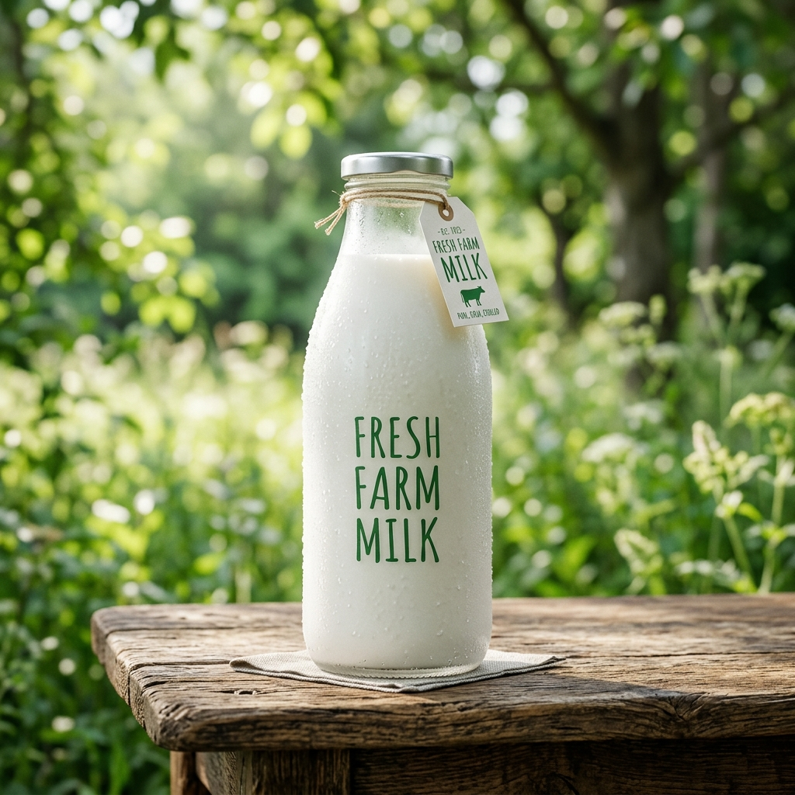

Protect your family from adulteration. Get 100% pure, farm-fresh Desi Cow and Buffalo milk delivered daily to Mathura, Vrindavan, and Agra.

In a market filled with impure and synthetic milk, Braj Pure stands as a beacon of health, promising uncompromised quality for your children and family.
No chemicals, no preservatives, and absolutely no added water. Just pure milk straight from healthy, grass-fed cows.
Our Desi Cow milk is naturally rich in A2 protein, making it easier to digest and incredibly beneficial for immunity.
Milked in the morning, delivered to your doorstep within hours to ensure maximum freshness and nutritional value.
Provide your growing children with the essential calcium, vitamins, and healthy fats they need for robust development.
Choose health. Choose purity. Choose Braj Pure.

Golden, sweet, and highly nutritious. Sourced from indigenous Indian breeds.
Rich, creamy, and perfect for making thick curd, ghee, and traditional sweets.
Born out of a necessity for genuine health, Braj Pure was started when we realized how difficult it was to find truly unadulterated milk for our own families. The market is saturated with synthetic, chemically processed alternatives masquerading as 'fresh milk'.
We decided to change that. Operating in the sacred lands of Mathura and Vrindavan, our dairy farm focuses on ethical farming practices. Our cows and buffaloes are treated with love, fed organic grass, and milked in highly hygienic environments. When you pay for Braj Pure, you are investing in your family's long-term health.
Purity Guaranteed
Farm to Home
Join hundreds of health-conscious families in Mathura, Vrindavan, and Agra who trust Braj Pure for their daily nutrition.
Or call us directly at: +91 98765 43210